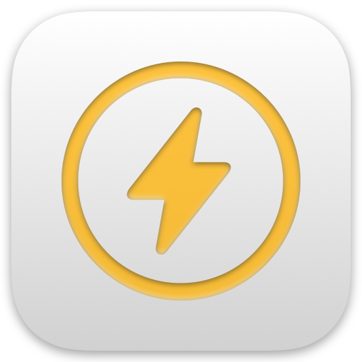

Tidy
Private website controls for Safari
Safari extension
Get started
- 1
Open Safari’s Page Menu, then choose Manage Extensions.
- 2
Turn on Tidy and allow access to all websites.
- 3
Open Tidy from the Page Menu whenever a website needs attention.
Advanced
Test what a site needs
Learning Clean uses an isolated browser to find site data that can be removed without breaking the page.
Optional
Support Tidy
Tidy stays free and fully unlocked for everyone.